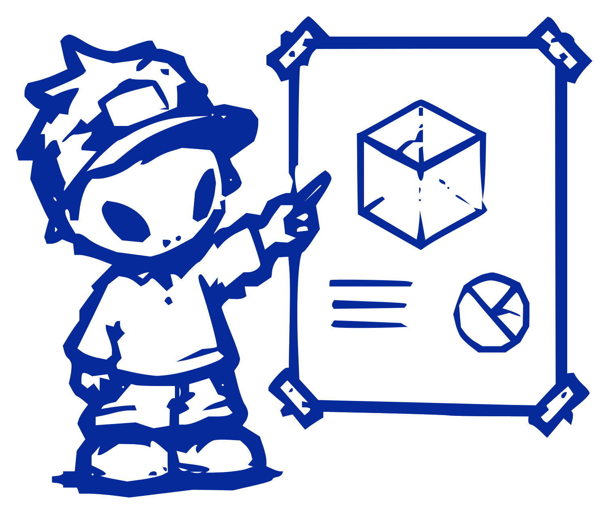
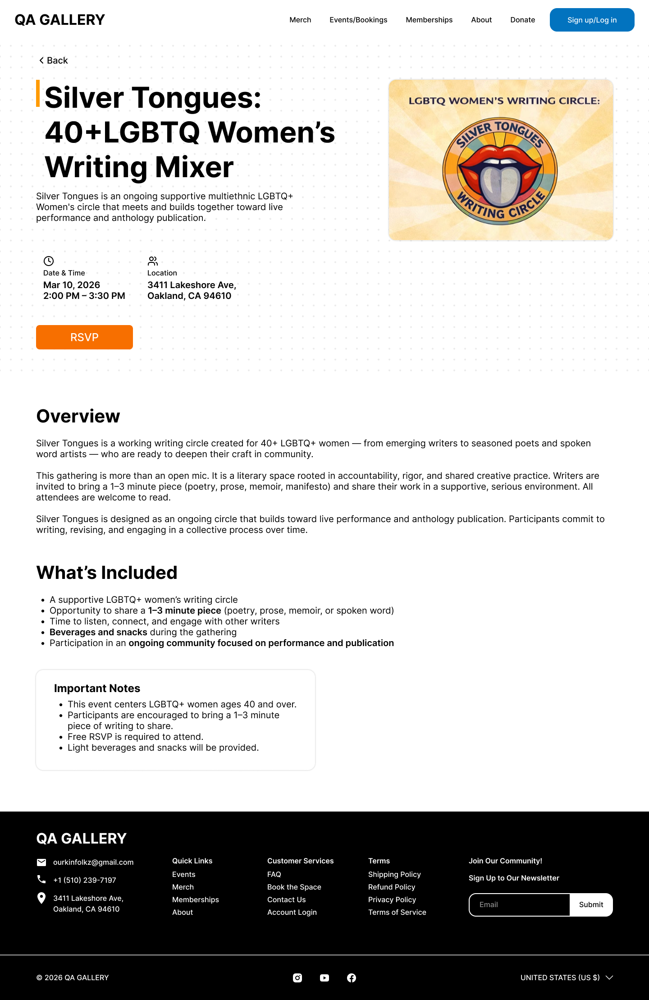
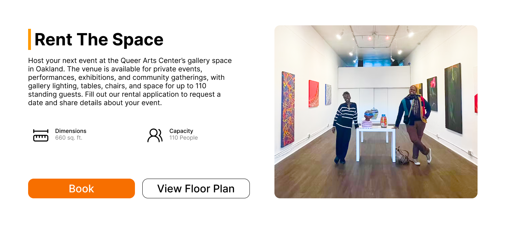

All workPRODUCT DESIGN • CLIENT
QAC Gallery
Redesign
Rebuilding an Oakland arts gallery's website into something accessible, artist-forward, and easy to act on.
A home for LGBTQ+ artists, hard to actually use
QAC Gallery is an Oakland space that shows LGBTQ+ artists, runs events, and offers creative resources. This was my first client project, working with a PM and three other designers. The site had the art, but it buried it. I focused on the part people actually come to the site to do: find events and book the space.
The art was there, but hard to find and act on
The old site fought itself: a nine-item nav, weak hierarchy, and event details scattered across cluttered pages. So we framed the work around one question.
How might we help people discover events, engage with the gallery, and support it, without getting lost?
Our design question
The client first, then the field
A client interview gave us four priorities. A competitive scan of other galleries showed the same weaknesses everywhere: visual clutter and weak structure. That was the opening. Lead with clear navigation, real hierarchy, and obvious calls to action.
★ The starred column is where I spent my time: the events and booking experience.
Fewer routes, clearer signage
Affinity mapping pointed at the same fix from every angle: simplify. I trimmed the top nav so the important paths stopped competing for attention, and gave events, workshops, and booking their own focused pages instead of one crowded catch-all.
Pick the workshop, then the date
Our first booking flow asked people to choose a date before they knew what they were signing up for. Testing made the fix obvious: people want to understand the workshop first. I reordered the flow to browse and select the workshop, then choose the date. A small reorder, a much calmer decision.
Clean, artist-forward, easy to scan
The rebrand dropped the "C" to become QA Gallery, with paint-splatter accents that nod to the work on the walls. Cluttered pages became clear cards with complete titles, dates, and tags, and every event and workshop leads with the details you need to commit.
everything you need
Upcoming Events: cluttered listings became scannable cards with date, time, and a clear next step.
Event pages that get to the point
Date, location, and a single obvious RSVP sit up top. Everything else, the overview and what is included, follows underneath for people who want it.


Rent The Space puts the practical details, size, capacity, and booking, within reach.
Workshops lead with price, duration, and what you will make, behind one booking button.
It finally feels like us. The art comes first, and everyone can find their way around.
QAC Gallery stakeholder
Designing for a client and its users
My first client project taught me to hold user needs and business goals at the same time, and to decide which wins when they pull apart. Communication gaps and a family emergency on the client side meant we pushed forward on our own judgment, and still delivered on time.
To take it further
- Confirm membership tiers and store inventory with the client.
- Run another round of usability testing and add testimonials.
- Finish the migration onto Wix.